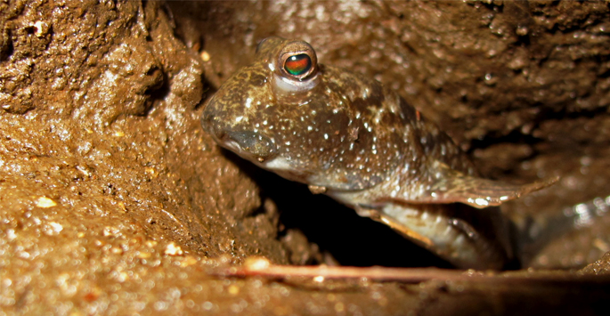
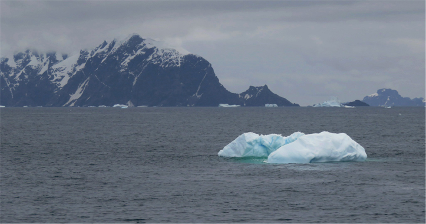
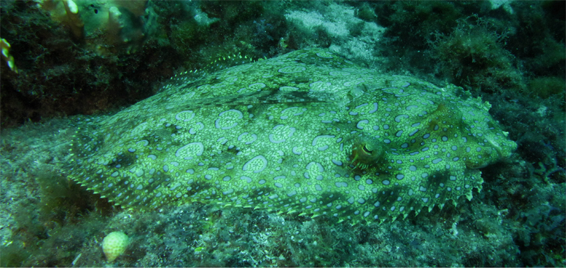

The Evolution of Marine Fishes
Venture a few feet into the ocean and you may well be somewhere no person has ever been. We know very little about our planet's oceans. However, about 1 out of every 4 vertebrate species alive today calls the ocean its home. How tihs diversity evolved and thrived against the backdrop of major climate and geologic change over hundreds of millions of years is a major research focus of our group
Many of our projects involve the use of phylogenetic comparative methods, in which we leverage a knowledge of how species are related and when they diverged, with large sequence, ecological, and/or morphological datasets. We recently collaborated with members of Dr. Tom Near's lab group and numerous other collaborators on a project assessing the impact of the K-Pg mass extinction event (remember that giant meteor that contributed to dinosaur declines and caused massive worldwide forest fires?) on marine biodiversity. Rather than recover in the evolutionary blink of an eye, the present day diversity of marine fish diversified over a polonged period long after the K-Pg event. In fact, it took such a long time you could say that the Cenozoic was the 2nd age of fishes. You can check out the preprint here
In addition to working with others on large macroevolutionary projects, our lab prioritizes work in two marine ecosystems: tropical coral reefs and the Southern Ocean of Antarctica
Life in the Antarctic
Unlike other marine environments, over 90% of the fish biomass of the Southern Ocean derives from a single clade: notothenioids. This clade represents a primary link between lower level and higher level consumers such as whales, seals, and penguins in the Antarctic food web, and one of the only examples of adaptive radiation in marine fishes.
The success of notothenioids has been attributed to their ability to thrive in subzero waters through the use of anti-freeze proteins. While long heralded as a stunning example of a key innovation that drives lineage diversification, our work on these fishes has demonstrated this to be far from the full story.
Instead, the diversification of notothenioids appears to have been highly influenced by more geologically recent warming events. As portions of the Southern Ocean are among the most rapidly warming regions on the planet, our work strives to provide explicit linkages between changes in ice movement and the evolutionary dynamics that underlie the generation of nototheniod biodiversity. Life on Coral Reefs
In vestibulum massa quis arcu lobortis tempus. Nam pretium arcu in odio vulputate luctus. Suspendisse euismod lorem eget lacinia fringilla. Sed sed felis justo. Nunc sodales elit in laoreet aliquam. Nam gravida, nisl sit amet iaculis porttitor, risus nisi rutrum metus.
Current Projects
- Faucibus orci lobortis ac adipiscing integer.
- Col accumsan arcu mi aliquet placerat.
- Lobortis vestibulum ut magna tempor massa nascetur.
- Blandit massa non blandit tempor interdum.
- Lacinia mattis arcu nascetur lobortis.